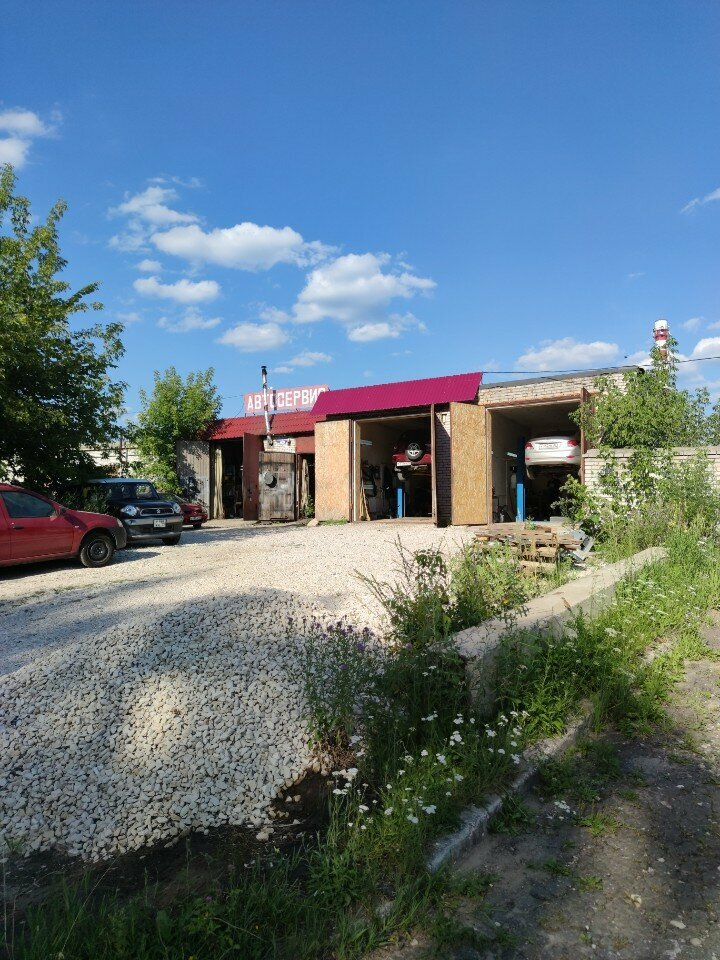
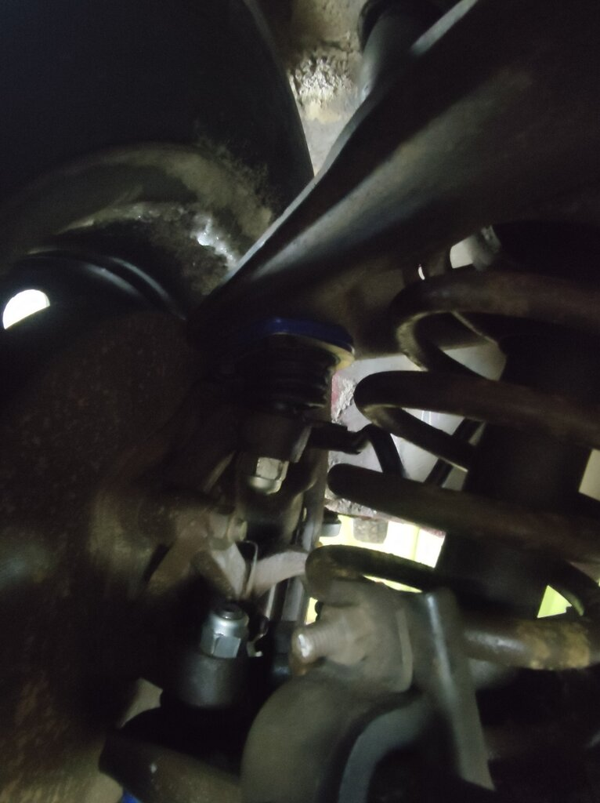
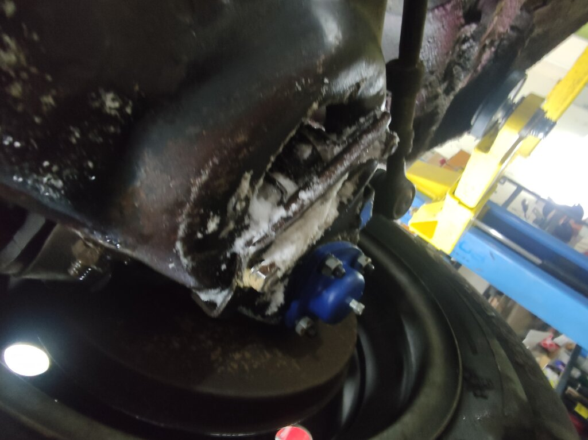
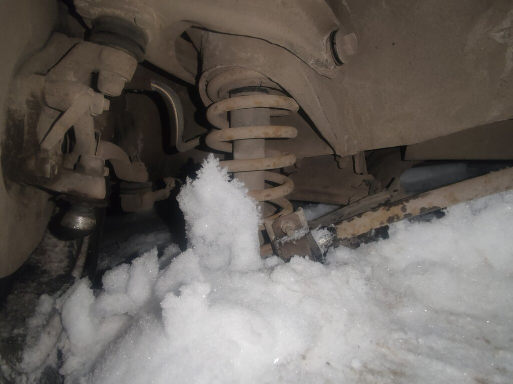

Диагностика
Если симптом есть, а причина не ясна, начинаем с проверки. После диагностики понятнее, можно ли ехать дальше и какие работы нужны.
Открыть список работКовров, ул. Блинова, 70А
Для ситуаций, когда машина стучит, плохо заводится, горит ошибка или пора на ТО. Сначала проверяем причину, затем согласуем работы, ориентир по цене и срокам.
Услуги
Не обязательно знать точную причину поломки. Найдите направление по ситуации: в карточках указано, когда обращаться, что проверяем и почему итоговая цена зависит от осмотра.
Если симптом есть, а причина не ясна, начинаем с проверки. После диагностики понятнее, можно ли ехать дальше и какие работы нужны.
Открыть список работПлановые замены с проверкой соседних узлов: что менять сейчас, а что можно планировать на следующий визит.
Открыть список работСмотрим источник стука, вибрации или тормозной проблемы до заказа деталей.
Открыть список работРазделяем симптомы, диагностику и ремонт: от простой причины до дефектовки сложного узла.
Открыть список работЕсли симптом есть, а причина не ясна, начинаем с проверки. После диагностики понятнее, можно ли ехать дальше и какие работы нужны.
Когда обращаться: Горит check, плавают обороты, вырос расход, появилась потеря тяги.
Для кого: Для бензиновых и дизельных авто перед ремонтом или дальней поездкой.
Как работаем: Проверяем симптомы, ошибки и параметры работы, чтобы не начинать ремонт с замены исправных деталей.
Когда обращаться: Передачи включаются туго, есть гул, рывки, пробуксовка или течь.
Для кого: Для владельцев авто с МКПП, РКПП и узлами трансмиссии.
Как работаем: Смотрим не только коробку, но и сцепление, приводы, крепления и уровень масла.
Когда обращаться: Тяжелый запуск, дымность, провалы, нестабильная работа на холодную.
Для кого: Для дизельных легковых авто и коммерческого транспорта.
Как работаем: Учитываем топливную систему, форсунки, датчики и состояние запуска.
Когда обращаться: Скрип, биение руля, длинный ход педали, увод автомобиля при торможении.
Для кого: Для тех, кто хочет понять, что менять сейчас, а что еще походит.
Как работаем: Проверяем колодки, диски, суппорты, шланги и жидкость в одной связке.
Когда обращаться: Не работает свет, зарядка, запуск, сигнализация, стеклоподъемники или датчики.
Для кого: Для машин с плавающими ошибками и проблемами после стороннего ремонта.
Как работаем: Ищем причину по цепи, а не просто стираем ошибки сканером.
Когда обращаться: Нужно считать ошибки, проверить датчики и понять направление ремонта.
Для кого: Для планового контроля, покупки авто и первичной проверки неисправности.
Как работаем: Объясняем результат простыми словами: что критично, что проверить дальше и с чего начать.
Когда обращаться: Вы смотрите автомобиль с пробегом и не хотите купить чужие проблемы.
Для кого: Для покупателей, которым нужен честный список рисков до сделки.
Как работаем: Смотрим двигатель, подвеску, электрику, кузовные признаки и следы ремонта.
Когда обращаться: Планируется трасса, отпуск или рабочая поездка без права на поломку.
Для кого: Для семейных авто, такси и коммерческих машин.
Как работаем: Проверяем узлы, которые чаще всего срывают поездку: тормоза, охлаждение, ремни, жидкости.
Плановые замены с проверкой соседних узлов: что менять сейчас, а что можно планировать на следующий визит.
Когда обращаться: Подошел интервал ТО, авто часто ездит по городу или после покупки нет истории.
Для кого: Для легковых авто с бензиновыми и дизельными двигателями.
Как работаем: Подбираем расходники по автомобилю и проверяем сопутствующие течи.
Когда обращаться: Троение, плохой запуск, рывки при разгоне или большой пробег свечей.
Для кого: Для бензиновых моторов и владельцев, которые хотят вернуть ровную работу.
Как работаем: Перед заменой учитываем состояние катушек, колодцев и резьбы.
Когда обращаться: Педаль стала мягкой, жидкость темная или прошло больше двух лет.
Для кого: Для машин после активной эксплуатации, зимы и ремонта тормозов.
Как работаем: После замены проверяем ход педали и герметичность системы.
Когда обращаться: Есть нагар, нестабильная работа, следы масла или нужна подготовка к ремонту.
Для кого: Для авто с пробегом и машин после долгого интервала обслуживания.
Как работаем: Перед работой уточняем цель чистки и не трогаем чувствительные зоны без необходимости.
Смотрим источник стука, вибрации или тормозной проблемы до заказа деталей.
Когда обращаться: Стук на кочках, увод, раскачка, неравномерный износ шин.
Для кого: Для городских авто, такси, семейных машин и коммерческого транспорта.
Как работаем: Сначала выявляем источник стука, потом согласуем список деталей.
Когда обращаться: Машина раскачивается, пробивает подвеску, ухудшилась управляемость.
Для кого: Для авто после пробега, плохих дорог и сезонной диагностики.
Как работаем: Проверяем опоры, пыльники, отбойники и соседние элементы.
Когда обращаться: Скрип, биение, износ колодок, перегрев или борозды на дисках.
Для кого: Для водителей, которым важна предсказуемая остановка без вибраций.
Как работаем: Оцениваем суппорты и направляющие, чтобы новые детали работали нормально.
Когда обращаться: Клинит колесо, течет жидкость, педаль проваливается или авто уводит.
Для кого: Для срочных случаев и планового восстановления тормозов.
Как работаем: Не ограничиваемся заменой колодок, если причина глубже.
Разделяем симптомы, диагностику и ремонт: от простой причины до дефектовки сложного узла.
Когда обращаться: Шум, дым, расход масла, перегрев, потеря мощности или пропуски.
Для кого: Для владельцев, которым нужно понять причину и объем работ до ремонта.
Как работаем: Согласуем диагностику, запчасти и этапы до начала работ, чтобы смета не росла без объяснения.
Когда обращаться: Компрессия низкая, сильный расход масла, мотор требует вскрытия.
Для кого: Для авто, где точечная замена уже не решает проблему.
Как работаем: Работаем по дефектовке и фиксируем, что нужно менять обязательно.
Когда обращаться: Перегрев, пробой прокладки, потеря компрессии, шум клапанов.
Для кого: Для моторов после перегрева и ремонта системы охлаждения.
Как работаем: Проверяем плоскость, клапаны и сопутствующие причины поломки.
Когда обращаться: Температура растет, течет антифриз, печка плохо греет.
Для кого: Для авто перед летом, зимой и после перегрева.
Как работаем: Ищем источник перегрева, а не просто доливаем жидкость.
Когда обращаться: Провалы, плохой запуск, нестабильный холостой ход.
Для кого: Для бензиновых авто с проблемами смеси и подачи топлива.
Как работаем: Проверяем форсунки, давление, датчики и подсос воздуха.
Когда обращаться: Запах топлива, плохая тяга, ошибки по смеси, неровная работа.
Для кого: Для бензиновых и дизельных машин с подозрением на подачу топлива.
Как работаем: Смотрим систему целиком: насос, фильтры, магистрали, форсунки.
Проверяем цепи, питание и ошибки, когда неисправность появляется не постоянно.
Когда обращаться: Машина не заводится, пропала зарядка, слышны щелчки или свист.
Для кого: Для авто с проблемами запуска и питания.
Как работаем: Проверяем аккумулятор, проводку, стартер и генератор до замены узла.
Когда обращаться: Ошибки возвращаются, блоки не выходят на связь, есть следы влаги.
Для кого: Для сложных электрических неисправностей.
Как работаем: Идем от схемы и измерений, чтобы найти настоящий обрыв или короткое замыкание.
Когда обращаться: Сигнализация мешает запуску, не закрывает двери или срабатывает сама.
Для кого: Для машин с установленной охраной и проблемами после монтажа.
Как работаем: Проверяем подключение и конфликт с штатной электроникой.
Когда обращаться: Нужна установка или ремонт помощников парковки.
Для кого: Для ежедневной городской езды и начинающих водителей.
Как работаем: Проверяем обзор, питание и прокладку проводки, чтобы оборудование работало без случайных отключений.
Когда обращаться: Нужно подключить магнитолу, динамики или исправить пропадающий звук.
Для кого: Для авто со штатной и доработанной аудиосистемой.
Как работаем: Сохраняем питание и управление, а проводку укладываем так, чтобы ее можно было обслужить.
Отделяем проблему сцепления, коробки, приводов и креплений, чтобы ремонт шел по причине.
Когда обращаться: Пробуксовка, запах, передачи включаются с трудом, педаль изменилась.
Для кого: Для авто с МКПП и роботизированными коробками.
Как работаем: Проверяем комплект, выжимной, вилку, цилиндры и состояние маховика.
Когда обращаться: Гул, хруст, вылет передач, рывки робота.
Для кого: Для машин, где коробка требует диагностики и дефектовки.
Как работаем: Сначала отделяем проблему коробки от сцепления и приводов.
Когда обращаться: Вибрации, удары при трогании, шум на скорости, течи.
Для кого: Для полноприводных авто и машин с карданной передачей.
Как работаем: Проверяем крепления, крестовины, подвесные и люфты.
Оцениваем повреждение на месте: что можно восстановить, где нужна замена или покраска.
Когда обращаться: Вмятины, сколы, последствия ДТП, коррозия или нарушенная геометрия.
Для кого: Для авто после повреждений и подготовки к продаже.
Как работаем: Оцениваем объем на месте и объясняем, что можно восстановить.
Когда обращаться: Лак потускнел, появились царапины, нужна покраска элемента.
Для кого: Для восстановления внешнего вида, когда важно заранее понять объем работ.
Как работаем: Подбираем подход по состоянию покрытия и объясняем, какой результат реалистичен.
Когда обращаться: Трещины, потертости, сломанные крепления после парковки или ДТП.
Для кого: Для локальных повреждений, когда менять деталь не хочется.
Как работаем: Смотрим крепления и геометрию, чтобы бампер держался нормально.
Когда обращаться: Скол, трещина, протечка или повреждение после камня.
Для кого: Для водителей, которым важны обзор и безопасность.
Как работаем: Помогаем выбрать ремонт или замену по размеру повреждения.
Когда обращаться: Кузов нужно защитить от соли, а салон сделать тише.
Для кого: Для машин, которые эксплуатируются круглый год.
Как работаем: Обрабатываем зоны риска и не закрываем грязь под покрытием.
Проверяем шум, запах, ошибки и состояние элементов до выбора работ.
Когда обращаться: Громкий выхлоп, дребезг, запах в салоне, прогоревшая труба.
Для кого: Для авто с повреждениями выхлопной системы.
Как работаем: Проверяем крепления, герметичность и состояние соседних элементов.
Когда обращаться: Потеря тяги, ошибки по эффективности, шум или разрушение элемента.
Для кого: Для машин с проблемами выхлопа и экологии.
Как работаем: Сначала проверяем причину ошибки и состояние элемента, потом обсуждаем варианты работ.
Когда обращаться: Нужно изменить поведение двигателя после диагностики и проверки состояния.
Для кого: Для исправных авто, где владелец понимает цель доработки.
Как работаем: Не беремся за прошивку как способ скрыть механическую неисправность.
Перед ремонтом
Клиенту важно понимать, что именно будут делать с машиной. Поэтому путь простой: осмотр, объяснение причины, согласование работ, затем ремонт.
Фото из Яндекс.Карт
Все фотографии на сайте взяты из карточки Алекс-Сервис на Яндекс.Картах: въезд, боксы и рабочие кадры. Так проще заранее оценить место, а не ориентироваться только по тексту.




Ситуации
Диагностика помогает понять, можно ли продолжать ездить, что делать сейчас и какие расходы могут появиться позже.
Проверим питание, запуск, ошибки, свечи и подачу топлива. Так проще понять, можно ли ехать дальше или лучше не откладывать ремонт.
Осмотрим подвеску, тормоза, колеса, крепления и трансмиссию. По результату станет ясно, что опасно сейчас, а что можно планировать.
Проверка до сделки помогает увидеть будущие расходы и аргументировать цену, если у машины есть скрытые дефекты.
Отзывы
На сайте только короткие пересказы основных тем. Оригиналы, рейтинг и фото можно открыть в карточке Яндекс.Карт.
Клиенты чаще выделяют спокойное общение и понятные объяснения по машине.
Тема: персоналВ отзывах упоминают, что ожидание легче принять, когда работы и время визита согласованы заранее.
Тема: ожиданиеПо теме ремонта людям важен понятный итог: что нашли, что сделали и что еще требует внимания.
Тема: ремонтКак записаться
Запись на осмотр
После заявки уточним симптом, автомобиль и удобное время визита. Если машина ведет себя опасно или не заводится, лучше сразу позвонить.
Вопросы
По простым работам назовем ориентир. Если причина неизвестна, сначала нужен осмотр: цена зависит от модели, доступа к узлу, состояния деталей и объема работ.
Мастер перезвонит, уточнит симптом, автомобиль и удобное время. Если ситуация срочная, лучше сразу позвонить по номеру на сайте.
Иногда да, но звонок заранее снижает риск ожидания: мастер подскажет, есть ли окно и сколько времени заложить.
Да, если деталь подходит к автомобилю и ее состояние позволяет ставить. Совместимость лучше обсудить до визита.
Да. Проверим основные узлы и объясним, какие расходы могут появиться после сделки.
Одна и та же услуга занимает разное время на разных машинах. Итог зависит от модели, состояния крепежа, доступа к узлу и запчастей.
Контакты
Позвоните перед приездом: мастер подскажет ближайшее окно и сколько времени заложить.
г. Ковров, ул. Блинова, 70А Ежедневно с 09:00 до 18:00 +7 (920) 908-88-39